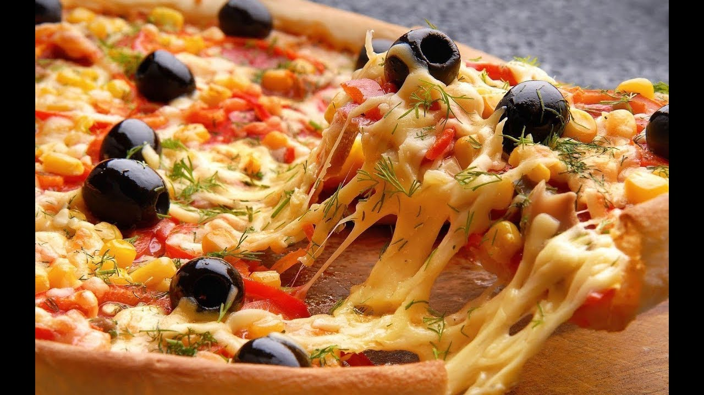

FAVORITE RECIPES
Chicken Soup
Mutton
Pizza
CHICKEN SOUP

Soup is a lot like a family. Each ingredient enhances the others; each batch has its own characteristics; and it needs time to simmer to reach full flavor."ONLY THE PURE OF HEART CAN MAKE A GOOD SOUP"
- Step1
- Step2
- Step3
- Step4
MUTTON

List Of Ingredients
- Ingredient 1
- Ingredient 2
- Ingredient 3
WHO CAN RESIST A FRESH MUTTON! Here's one of my favorites.
- Step1
- Step2
- Step3
- enjoy!
PIZZA

Pizza makes you think that anything is possible.
- Step1
- Step2
- Step3
- enjoy!